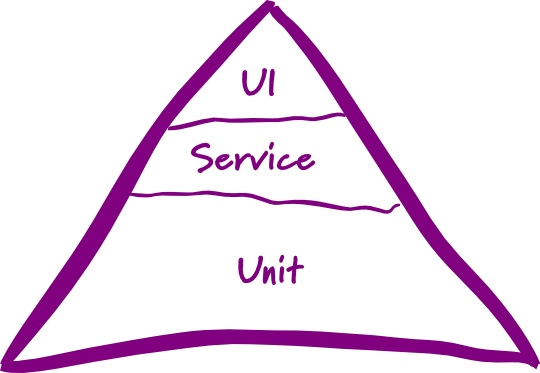

什么是自动化测试？
自动化测试是相对于手动化测试存在的，对比于手动测试来说(比如需要测试GUI的时候，测试人员需要用鼠标去手动测试)，自动化测试就是使用程序或脚本来测试相应的功能。 其实就是将一切可以由程序自动完成的测试任务转化为相应的自动化测试框架来自动执行。
实现自动化测试的目的是为了改进软件测试生命周期的效率和有效性，通过重复测试来提高测试效率。同时在我看来自动化测试还可以防止程序出 bug ，可以快速反馈程序功能在预定期望内是否能正常运行，帮助更好的重构代码，提高软件质量。
那些自动化测试
单元测试 (又称为模块测试, Unit Testing)
单元测试是指对软件中的最小可测试单元进行检查和验证的方式，然后通过检查和验证的结果来确定最小单元的行为是否与预期的一样。什么是最小可测试单元，一般来说，要根据实际情况去判定其具体含义，如C语言中单元指一个函数，Java里单元指一个类，图形化的软件中可以指一个窗口或一个菜单等。总的来说，单元就是人为规定的最小的被测功能模块。
在程序中，bug 很多时候都是存在各个独立单元中，而很多时候我们将花费大量的时间在跟踪这些 bug 上。如果有了单元测试，我们将可以快速的定位到 bug 出现的原因，所有说单元测试可以起到预防 bug 和 排除 bug 的作用。对于没有被测试覆盖的代码，没有人能保证它的功能是好的，但是如果有了测试案例测试相应的代码，至少我们可以保证，在这种测试案例下代码功能是能正常运行的。单元测试也是一种文档的记录，因为每个单元测试的描述，都可以反映这个被测单元的功能。
单元测试也属于白盒测试，在编写单个单元测试，需要全面了解这个单元内部的逻辑结构，对所有逻辑的可能性(也就是不同的输入将导致多少种不同输出)进行测试，这个过程需要穷举出所有的逻辑路径，并对所有的逻辑路径进行覆盖测试。所以一般情况下，在系统中单元测试是最多的，因为它要覆盖各个单元内部的逻辑分支，正如测试金字塔显示的，它处于最底层，数量是最多的，为了保证这么多单元测试运行效率，在编写单元测试的时候，不需要访问真实的数据库、不需要访问真实的网络、不需要访问真实的第三方服务...，只关心单元的内部的逻辑，将其它阻碍运行效率的依赖调用，使用stub/mock/fake等模拟技术，模拟单元内部逻辑调用其它依赖的返回。

集成测试 (Integration Testing)
集成测试是将程序中的几个模块集成起来测试，通过测试可以验证各个模块之间是否能够正常的协作工作，它能反映模块的接口之间的通信是否正常，而单元测试只是保证了模块中各个单元功能的完整性，有的时候单元测试无法发现的问题，可以通过集成测试发现。
在编写集成测试时，我们需要关注的是接口输出是否能够正确的对应上相应的输入(就是输入经过集成后模块间的处理后是否能输出正确结果)，同时也需要关注模块内部的表现，但是不需要对模块内部功能和运作进行详细的了解，只需要了解模块的接口之间是如何相互作用(协作运行)的，可以说集成测试也属于灰盒测试。
功能测试 (Integration Testing)
功能测试是完成从系统的边界外，不对系统内部做任何假设，就是以用户的方式对系统进行使用测试，来检测系统是否达到用户要求的功能。功能测试也称为黑盒测试，系统就是一个黑盒，在编写功能测试时不考虑系统内部结构和逻辑结构，通过对系统的相应功能的接口进行测试，来检查系统功能是否满足需求卡的功能。功能测试编写和维护都比较困难，而且运行起来的比较慢。测试者选择有效输入和无效输入来验证是否正确的输出。